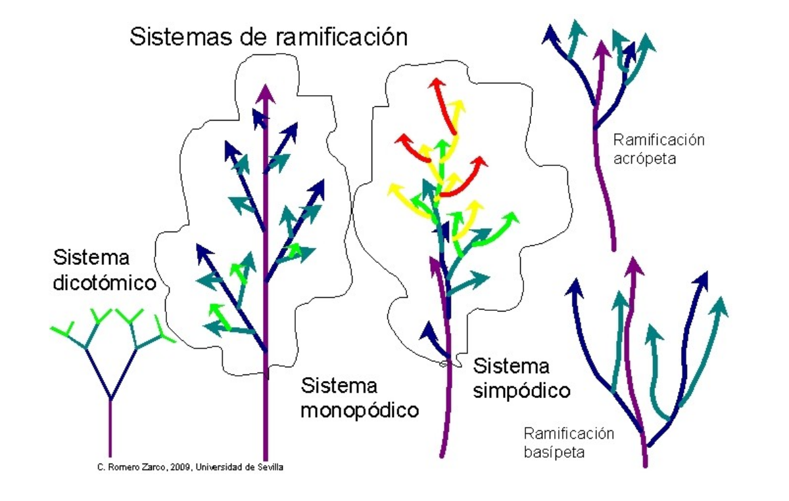
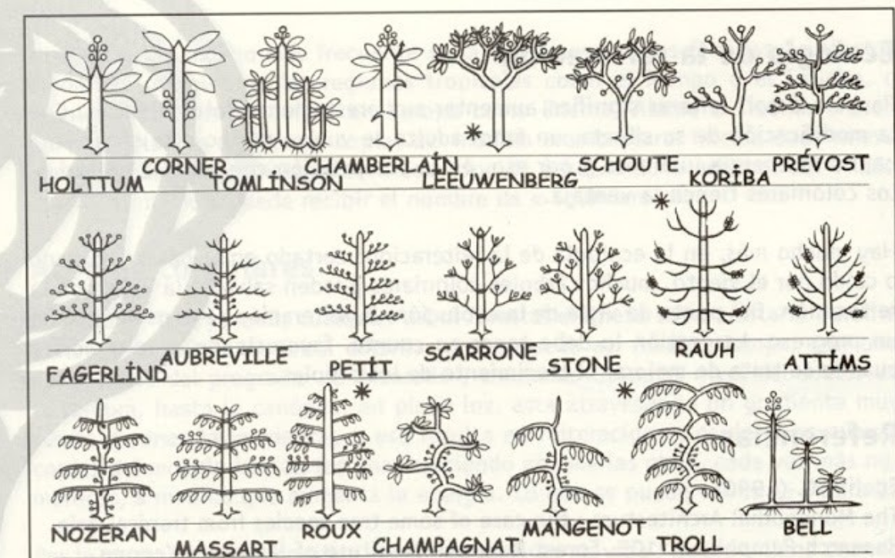

Tras estudiar detenidamente la estructura de numerosas especies de árboles, el profesor Francis Hallé llegó a algunas conclusiones:
La poda
Los modelos arquitecturales (F. Hallé)
Sistema de ejes
Cada árbol tiene una unidad arquitectural básica que replica sucesivamente mediante ramificaciones. A este proceso se le llama reiteración, y a cada “nivel” se le llama eje. Así, un árbol se estructura de la siguiente manera:
- EJES 1: Tronco/s principal/es.
- EJES 2: Se insertan sobre ejes 1.
- EJES 3: Se insertan sobre ejes 2.
- etc...
Modelos de crecimiento
En una planta, cada brote o simpodio tiene un desarrollo anual, que Hallé considera como la unidad vegetativa. Así, se ha identificado que cada simpodio
puede crecer, básicamente, de 3 formas:
Crecimiento DICOTÓMICO
La yema apical se divide en dos casi iguales y las ramificaciones resultantes son equivalentes. Es el tipo más primitivo y se da en fósiles y en algún grupo de helechos. Permite una ramificación rápida que ocupa un gran volumen, pero la planta no puede competir en altura.
Crecimiento MONOPODIAL
El crecimiento anual se produce sobre la misma yema terminal que desarrolló el crecimiento anterior. Así, aunque el vástago principal produce brotes laterales de segundo orden, mantiene siempre su predominio y posición central. Es un sistema de ramificación estrictamente jerarquizado, típico de las palmeras, las coníferas y de las fases juveniles de muchas Angiospermas. Permite alcanzar gran altura rápidamente, aunque si se daña la yema apical se aborta el desarrollo normal.
Crecimiento SIMPODIAL
El vástago principal produce uno o más brotes laterales y deja de crecer. Al año siguiente, su función es sustituida por alguno de los brotes laterales, y así sucesivamente, de forma que el "tronco" o eje principal está formado por una sucesión de ejes de distinto orden de ramificación. Aunque el crecimiento es algo más lento que el monopódico, esta forma de crecer permite resistir mejor a las agresiones, ya que siempre hay yemas de sustitución, y permite generar gran cantidad de formas adaptadas a diferentes condiciones ambientales. Dentro del crecimiento simpodial, se distinguen 2 variantes, reguladas por control hormonal. Si la planta tiende a ramificarse por abajo (ramificación basípeta), dará lugar a un arbusto. En cambio, si la planta tiende a ramificarse por arriba (ramificación acrópeta), dará lugar a un árbol.
Modelos arquitecturales
Como consecuencia de su modelo de crecimiento, cada especie tiene una arquitectura determinada. Los profesores Hallé y Oldeman proponen 22 modelos arquitecturales:

En la medida de lo posible, deberemos respetar al máximo la arquitectura del árbol.
Obra publicada con Licencia Creative Commons Reconocimiento Compartir igual 4.0